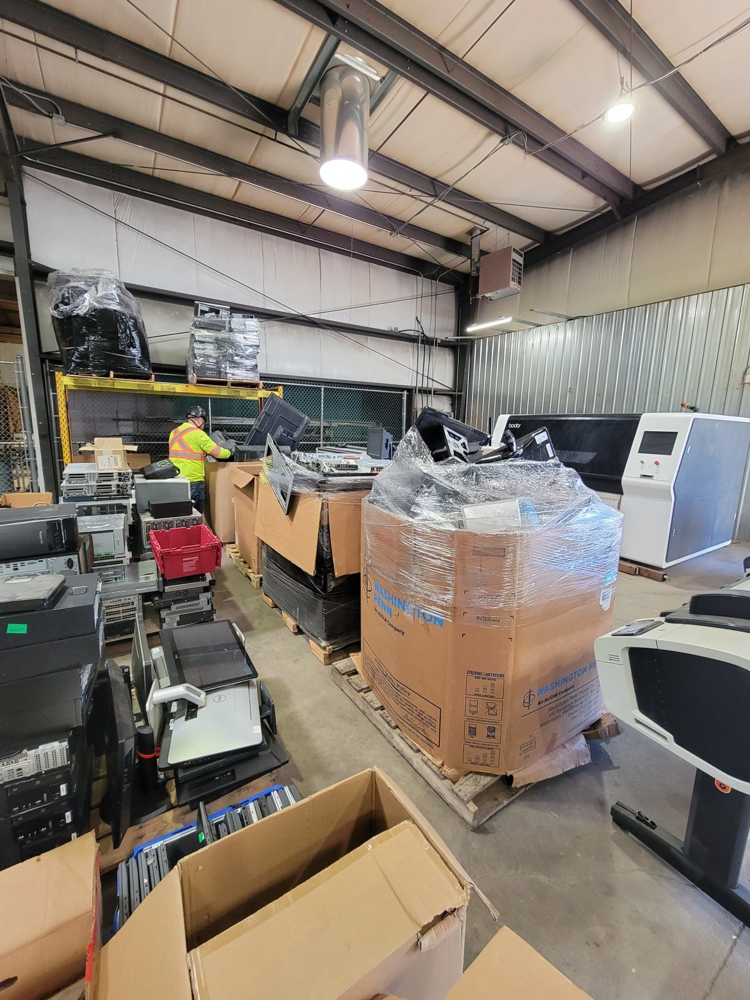
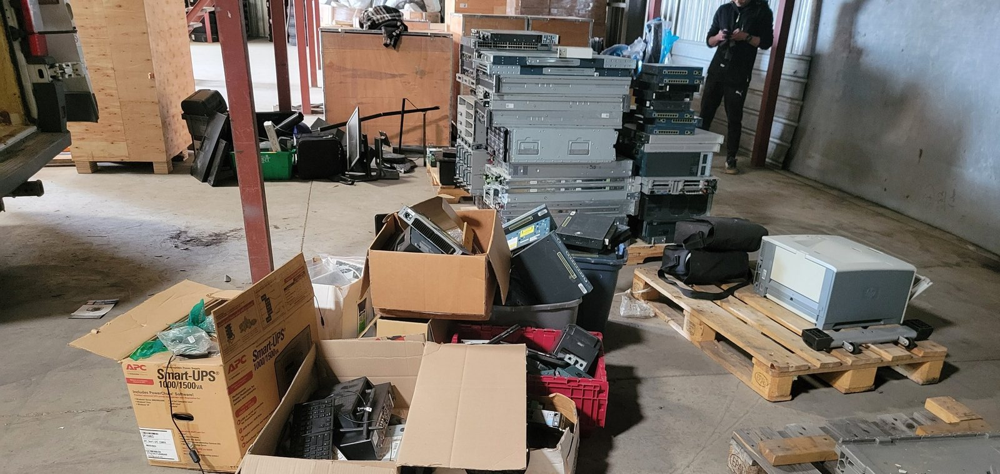

Recyclage
Recyclage électronique
Ordinateurs, serveurs, téléphones, matériel réseau, moniteurs, câbles, cartes électroniques et plus encore.
CPER réunit la collecte, la sécurité des données, le réemploi, le recyclage et la récupération de valeur dans un processus simple.
Ordinateurs, serveurs, téléphones, matériel réseau, moniteurs, câbles, cartes électroniques et plus encore.
Inventaire, effacement sécurisé des données, évaluation, réemploi, revente et rapports de traitement et de traçabilité pour les projets TI.
Effacement vérifié ou destruction physique des supports de stockage, avec documentation disponible.
En savoir plus →Nous cherchons à prolonger la vie du matériel fonctionnel avant de le recycler.
Certains appareils réutilisables et certaines composantes peuvent être admissibles à l’achat.
Ce que nous achetons →Le matériel qui ne peut plus être réemployé est confié à des recycleurs canadiens qualifiés pour la récupération des matières.

Après la collecte, le matériel est trié et évalué selon son état, les exigences de sécurité des données, son potentiel de réemploi et sa valeur matérielle.
Le matériel fonctionnel peut être préparé pour le réemploi ou la récupération de valeur, tandis que le matériel en fin de vie est séparé pour un traitement responsable en aval.

CPER peut coordonner la collecte de matériel TI et électronique provenant de bureaux, d’entrepôts, d’établissements et d’autres organisations.
Pour les volumes admissibles dans nos régions desservies, la collecte commerciale peut être effectuée sans frais et aucune adhésion n’est requise.
CPER possède une expérience pratique en récupération, réemploi, remise à neuf, traitement du matériel contenant des données, récupération des matières et traitement en fin de vie. Cette expérience nous aide à évaluer les lots mixtes et à recommander une solution adaptée au projet.
Pour les volumes commerciaux admissibles, des collectes gratuites sont offertes dans nos régions desservies, sans frais d’adhésion ni frais annuels de programme.
Selon le projet, CPER peut fournir des renseignements sur les quantités traitées, les numéros de série, le réemploi, la destruction des données et la disposition en fin de vie afin de soutenir vos rapports ESG et environnementaux.
Nous pouvons adapter le niveau de détail aux besoins de votre organisation, sans alourdir inutilement le processus.
Vous n’avez pas besoin d’un inventaire parfait. Une estimation des quantités, quelques modèles et des photos suffisent généralement pour commencer.